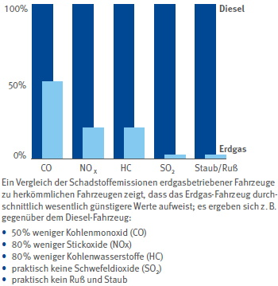
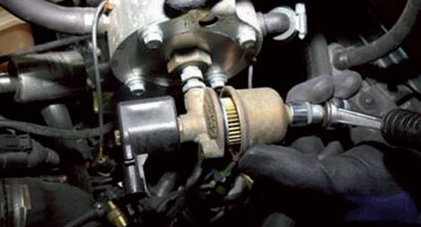
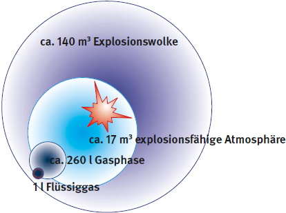

Derzeit wird für den Antrieb von Kraftfahrzeugen der Einsatz von Erdgas (Compressed Natural Gas – CNG) als umweltverträglichster fossiler Energieträger verfolgt.
Aufgrund dessen und des reduzierten Mineralölsteuersatzes für Erd- und Flüssiggas (Liquid Petroleum Gas – LPG; umgangssprachlich auch Autogas genannt) ist der Anteil der mit Gas betriebenen Kraftfahrzeuge ständig gewachsen.
Anlagen für Fahrzeuge, die mit Erd-, Flüssiggas oder Wasserstoff betrieben werden, fallen unter den Oberbegriff Autogasanlagen.
Die Thematik "Wasserstoff" wird in der DGUV Information 209-072 "Wasserstoffsicherheit in Werkstätten" hinsichtlich der Anforderungen an die Werkstatt, der Maßnahmen für sicheres Arbeiten und des Explosionsschutzes ausführlich erläutert.
Im Vergleich zu herkömmlichen Benzin- und Dieselmotoren zeichnen sich mit Erdgas betriebene Motoren durch geringe Schadstoffemissionen aus (Abbildung 7-1).

Abb. 7-1 Prozentuale Reduzierung von Schadstoffen bei Erdgas gegenüber Diesel
In vielen Verkehrsbetrieben hat sich der Einsatz erdgasbetriebener Busse bewährt. Von Pkw-Herstellern werden inzwischen Fahrzeuge angeboten, die serienmäßig mit einem mono- oder bivalenten Antrieb ausgerüstet sind. Bivalent bedeutet, dass wahlweise mit Gas oder Ottokraftstoff gefahren werden kann.
Die ab Herstellerwerk oder nachträglich mit einer Gasanlage ausgerüsteten Fahrzeuge müssen trotz bewährter Gastechnik regelmäßig in einer zur Durchführung von Gassystemeinbauprüfungen (GSP) oder von Gasanlagenprüfungen (GAP) anerkannten Werkstatt (Sachkunde-Schulungen) gewartet und instandgesetzt werden.
Unter Berücksichtigung der Herstellervorgaben ist für den Umgang mit gasbetriebenen Fahrzeugen eine Betriebsanweisung zu erstellen; die Versicherten sind regelmäßig, mindestens einmal jährlich, arbeitsplatzbezogen zu unterweisen. Eine Hilfestellung dazu kann das Plakat "Arbeiten an Flüssiggas (LPG)-Fahrzeugen (Pkw)" des Zentralverbandes des Deutschen Kraftfahrzeuggewerbes (ZDK) geben.
Bereits bei der Auftragsannahme beginnt die Verantwortung für den sicheren Umgang mit dem Kraftfahrzeug. Durch eine gezielte Kundenbefragung erhält der durchführende Betrieb hilfreiche Informationen über den Zustand und eventuelle Mängel der Gasanlage.
Vor Einfahrt in die Werkstatt ist generell die Dichtigkeit der Gasanlage sicherzustellen. Diese Prüfung kann mit einem Lecksuchgerät und/oder Lecksuchspray durchgeführt werden. Bei Undichtigkeiten an direkt am Tank befestigten Armaturen muss das Fahrzeug im Freien belassen werden. Im Umkreis von 10 m dürfen sich keine Vertiefungen (Gase schwerer als Luft, LPG) und Zündquellen befinden.
Werden keine Arbeiten mit kontrollierter Gasfreisetzung (z. B. Tausch der Gasfilter, Abbildung 7-2) durchgeführt und ist die Gasanlage technisch dicht, sind die üblichen Standardgefährdungen, wie an einem Fahrzeug ohne Gasanlage, zu berücksichtigen.

Abb. 7-2 Filterwechsel LPG
Grundsätzlich besitzen beide Gasarten beim Einatmen eine narkotisierende Wirkung. Das Einatmen hoher Konzentrationen kann zum Ersticken führen.
Der Kontakt von Flüssiggas mit der Haut und den Augen kann zu Erfrierungen führen. Muss die Gasanlage geöffnet werden, wobei kontrolliert Gas freigesetzt wird, ist das Tragen von Schutzhandschuhen und einer Korbschutzbrille notwendig.
Oft werden Brandgefahr und Bildung explosionsfähiger Atmosphären unterschätzt.
Wenn bei Arbeiten an der Gasanlage nicht mit Sicherheit auszuschließen ist, dass Gas austritt, müssen an diese Arbeitsbereiche spezielle Anforderungen gestellt werden.
Bei der Instandhaltung mit kontrolliertem Gasaustritt ist am Arbeitsplatz mindestens ein dreifacher Luftaustausch in der Stunde (Luftwechselrate ≥ 3/h) zu gewährleisten. Dadurch werden die Gaskonzentrationen in der Luft unterhalb ihrer Zündfähigkeit gehalten.
Aber auch unter diesen Bedingungen kann sich eine explosionsfähige Atmosphäre in Umhüllungen am Fahrzeug, z. B. im Motorraum, bilden. Aufgrund dessen müssen im Bereich des Gasarbeitsplatzes wirksame Zündquellen vermieden werden. Dazu zählen offenes Feuer, elektrische Funken, elektrostatische Entladungen und heiße Oberflächen.
Selbstverständlich besteht hier ein generelles Rauchverbot.
Außerdem müssen geeignete, leicht zugängliche Feuerlöscheinrichtungen bereitgestellt werden.
Zusätzlich sind je nach Gasart weitere Bedingungen zu erfüllen.
Da Erdgas leichter als Luft ist, muss der Luftaustausch über Entlüftungsflächen im Dachbereich erfolgen. Dabei muss unbedingt auf Zuluft in Bodennähe geachtet werden. Der Gasarbeitsplatz und der Abstellplatz für Flüssiggasfahrzeuge muss über Erdgleiche liegen. Da Flüssiggas schwerer ist als Luft, fließt es über den Boden zur tiefsten Stelle. Deshalb dürfen sich im Umkreis von 3 m um das Tankentnahmeventil als Mittelpunkt keine Vertiefungen oder Bodenöffnungen, in die das Gas fließen kann, befinden. Angrenzende Büroräume mit tiefer liegendem Bodenniveau zählen dazu. Des Weiteren dürfen Gasanlagen nicht über unbelüfteten Arbeitsgruben oder Unterfluranlagen geöffnet werden.
Äußerst problematisch sind Fehler an der Gasanlage, die als unwahrscheinlich eingestuft und deshalb nicht beachtet werden, sodass Gas in unkontrollierten Mengen austreten kann. So z. B. bei einem nicht ordnungsgemäß schließenden Tankentnahmeventil.
Tankventile dürfen deshalb nur bei vollständig entleertem Tank (Flüssig- und Gasphase bei LPG) gewechselt werden. Auch wenn der Begriff "Gasarbeitsplatz" eine generelle Sicherheit suggeriert, darf der Gastank (CNG und LPG) keinesfalls in Räumen geleert werden! Die vorgesehene Luftwechselrate von 3/h ist nicht in der Lage, die so schnell freigesetzten Gasmengen ausreichend zu verdünnen.
Aus einem Liter Flüssiggas entsteht z. B. eine explosionsfähige Atmosphäre von bis zu 17 m3. Daraus bildet sich nach dessen Zündung innerhalb kürzester Zeit eine Explosionswolke (Abgase) von ca. 140 m3 (Abbildung 7-3). Daher müssen beim Öffnen der Zuleitung an Lastkraftwagen die frei werdenden Gasmengen vorab ermittelt werden, eventuell ist das Öffnen im Freien durchzuführen.

Abb. 7-3 LPG, Gasvolumina vor und nach einer Explosion
Für eine umfassende Betrachtung müssen nicht nur die Gefährdungen aufgrund direkter Arbeiten an der Gasanlage berücksichtigt werden. Als Beispiel werden hier die Karosseriearbeiten genannt. Die Arbeiten müssen oft in unmittelbarer Nähe der Gasanlage durchgeführt werden. Es sind alle Vorgänge zu berücksichtigen, bei denen die Gasanlage unbeabsichtigt geöffnet wird und Gas unkontrolliert austreten könnte. Dazu gehören insbesondere Trenn-, Schleif- und Schweißarbeiten. Lässt das Schadensausmaß an der Karosserie die Notwendigkeit solcher Arbeiten erkennen, muss die Gasanlage vorab entleert werden.
Auch Lackierarbeiten müssen berücksichtigt werden. Sollte beim Trocknen (z. B. in einer kombinierten Spritz- und Trocknungskabine) eine höhere Temperatur als 60 °C erforderlich sein, ist der Gastank auszubauen. Ist der Tank im Neuzustand, also noch nie gefüllt worden, kann er natürlich im Fahrzeug verbleiben.
Als Hilfestellung für die sichere Gasbehälterentleerung können die Inhalte des Praxisratgebers "Tankentleerung bei Flüssiggas-Fahrzeugen" herangezogen werden. Zu beziehen ist der Ratgeber beim Zentralverband Deutsches Kraftfahrzeuggewerbe oder als Download auf der Internetseite der BGHM.